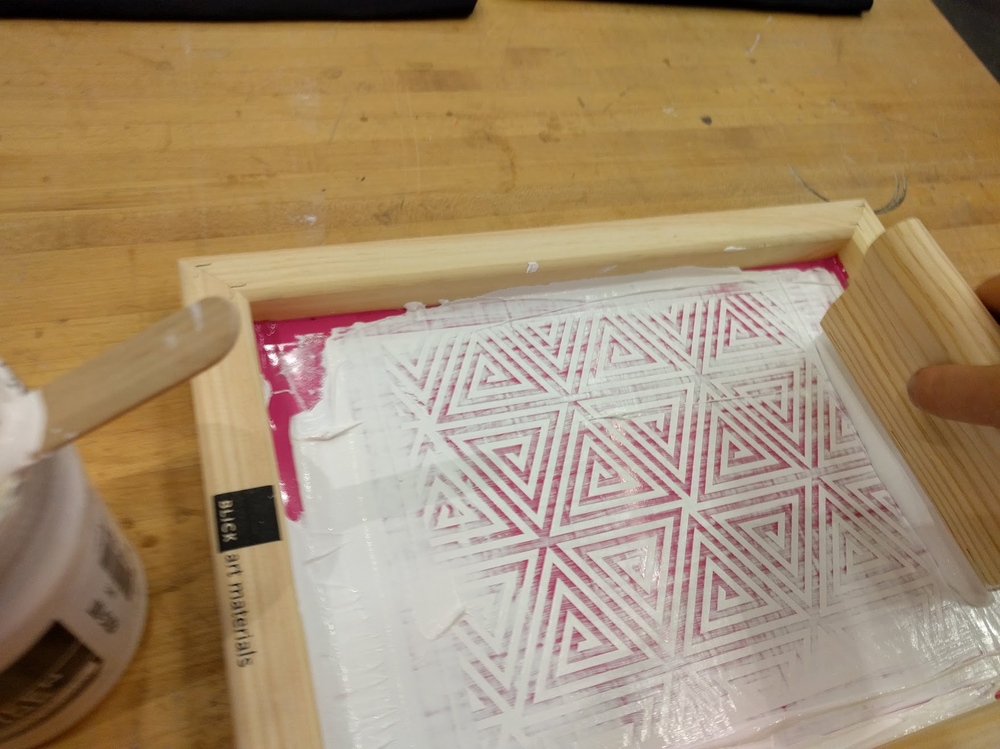

I recreated a geometric pattern from a piece of clothing that I had using Rhino. Then cut a vinyl sticker with the Roland and stuck it to a silk screen to print. I made messenger bags from canvas, it would have been better to use a thicker weave.

I made some heavier duty bags for my brother using left over canvas that's normally used to make backpacks. I made the straps from strong webbing and included a buckle for adjustability.
I impulse bought some beautiful sequin material from a fabric shop. For this jacket I just copied the pattern of a loose Uniqlo jumper that I had, sewed it up into the jumper form and cut it open as a last step. I used my housemates heavy duty sewing machine which he used for repairing sails to eat through the sequins. Sadly this along with the rest of my luggage and trombone was stolen somewhere north of Rome. I will always mourn it but hope there's a sparkling Italian tooting away somewhere in the Roman countryside.
As a TA for How to Make (almost) Anything I did some research into the properties of composites made from standard fabrics. The work is documented here.